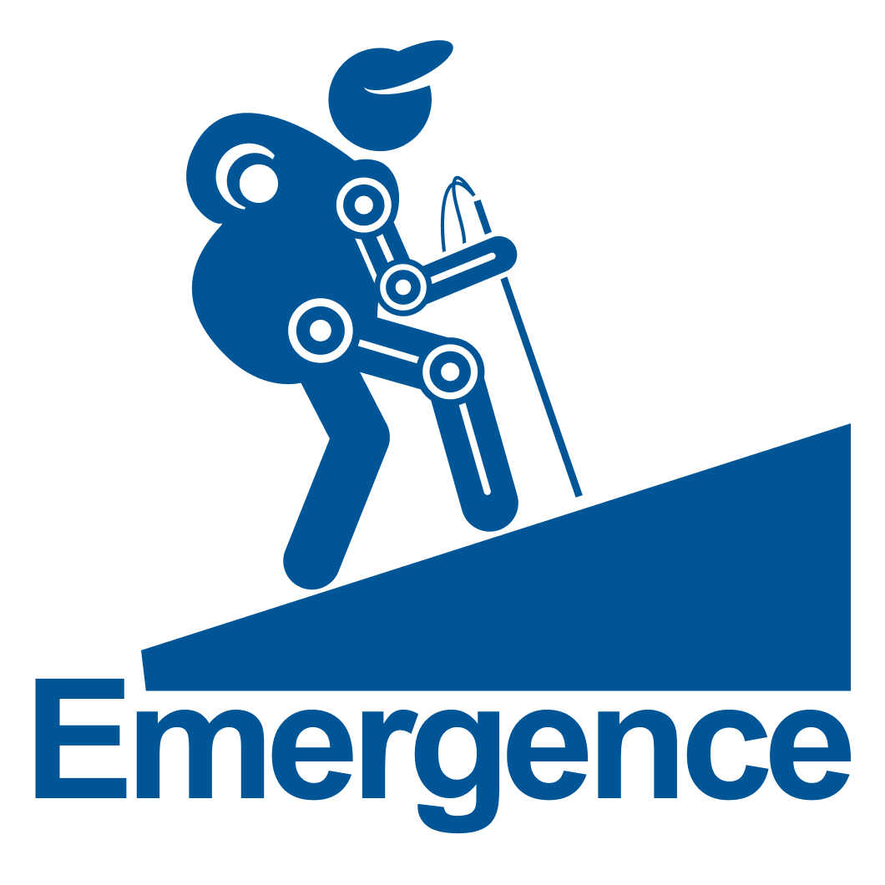

Funded project
EMERGENCE: Healthcare Robotics for Frailty in the Community
EMERGENCE was an EPSRC Healthcare Technologies Network+ project focused on building a sustainable ecosystem that connected researchers, industry, healthcare providers, service users, regulators and policy makers. Its aim was to support the development and adoption of robotic technologies that can help people living with frailty in community settings.
- Supporting world-class healthcare robotics research and development for people living with frailty in UK communities.
- Connecting researchers, industry and healthcare providers to strengthen the infrastructure needed for translation and adoption.
- Using living lab test beds and funded feasibility studies to support co-designed, high-quality research.
- Contributing guidance and resources through the EMERGENCE Body of Knowledge, including the White Paper on Robotics in Health and Social Care.